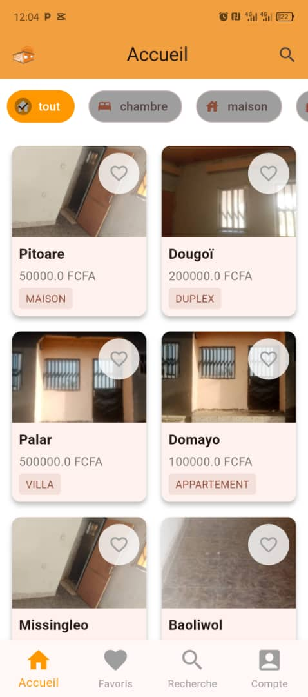
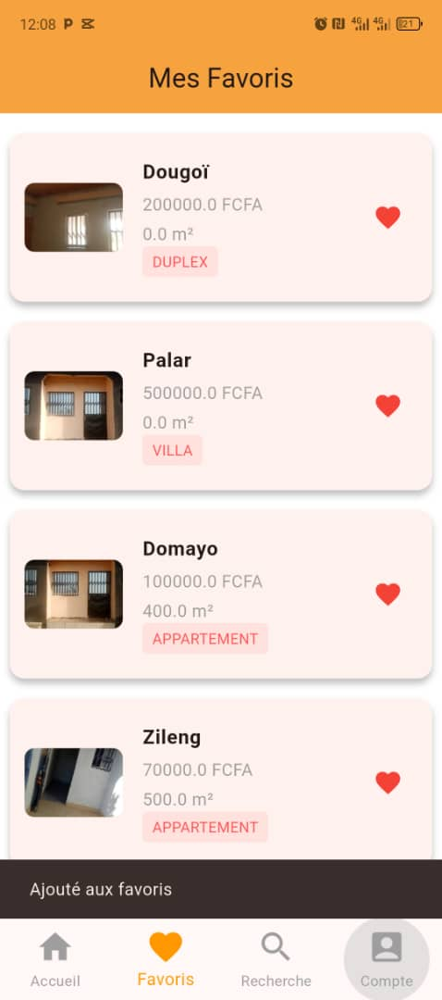
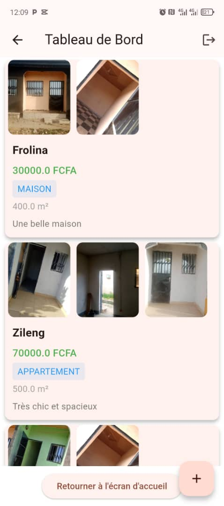
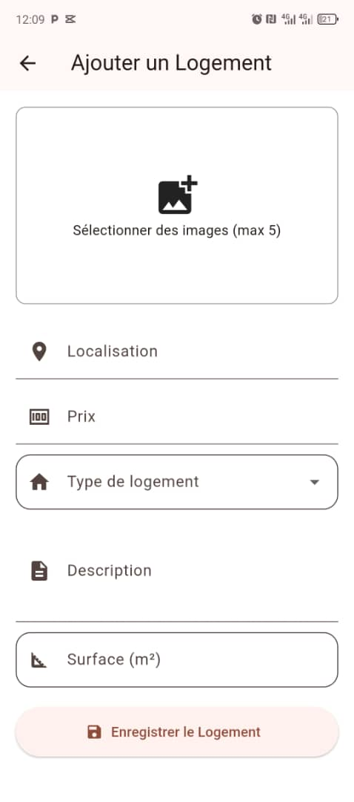

Mes projets




App de gestion de tâches
Une app Flutter avec rappels, notifications et base Sqflite. Interface claire pour organiser ses tâches.


Jeu éducatif pour médecins
Un jeu sérieux pour entraîner les étudiants à poser des diagnostics et traiter des cas cliniques.


Site WordPress colloque
Site événementiel avec 6 pages : Accueil, Programme, Intervenants… fait en local avec WordPress.